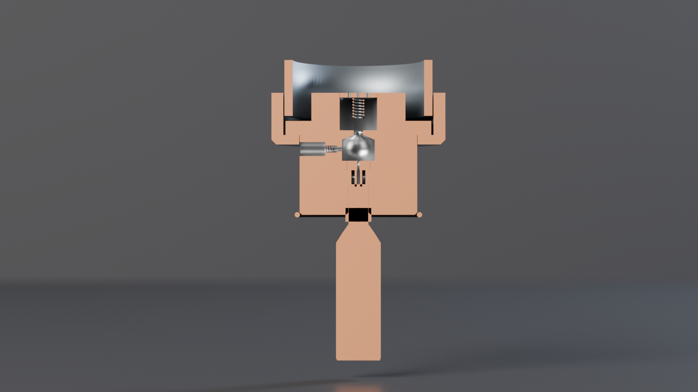
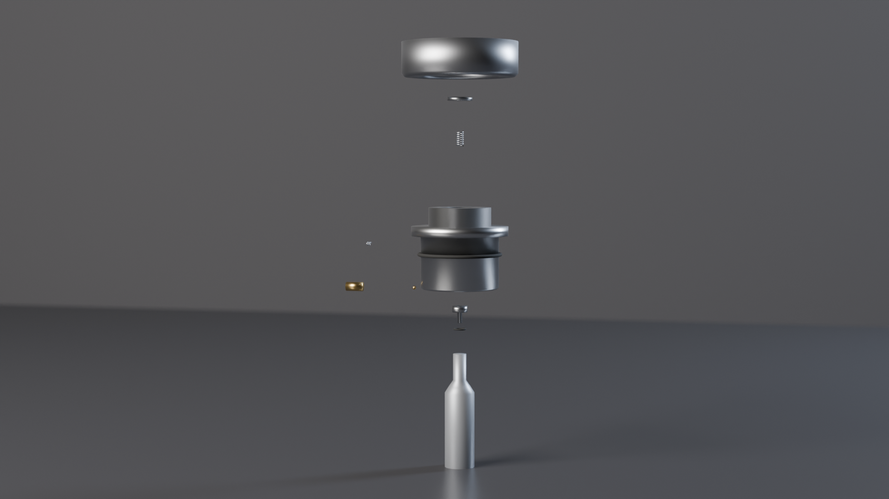
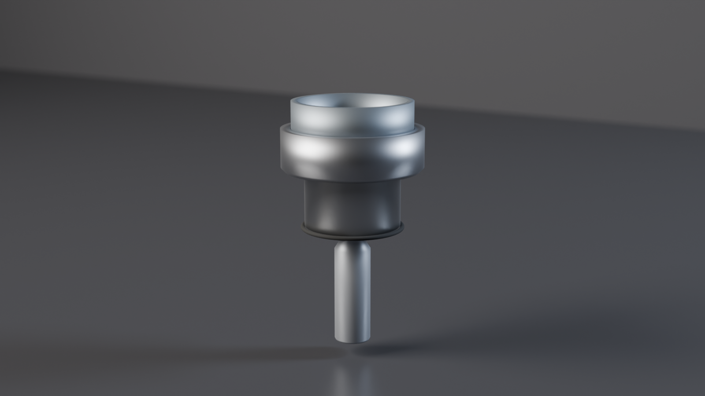
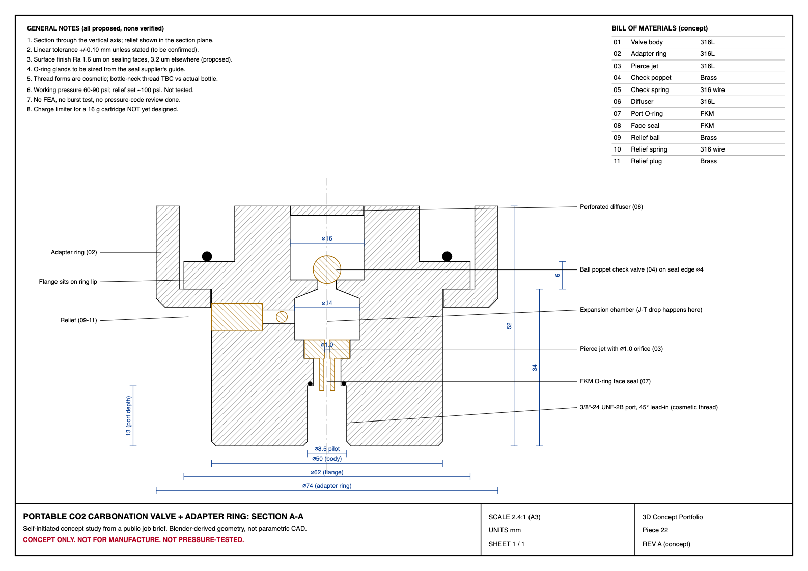

Portable CO2 Carbonation Valve: working concept demo
A bottom-mounted CO2 injection valve and threaded adapter ring that mates with an off-the-shelf wide-mouth bottle. Below: a live section view you can operate, a simple simulated dose, hand calculations, renders, a printable STL and a dimensioned sheet.
What the demo is showing
- Port: 3/8"-24 UNF female port, 8.5 mm pilot, 45° lead-in chamfer, FKM O-ring face seal at the shoulder. A fixed hollow pierce pin (316L) opens the cartridge seal as it is screwed in.
- Joule-Thomson management: the pin leads to a 1.0 mm brass-ready orifice jet, then a 14 mm expansion chamber, so the large pressure drop happens in a known volume with 18 mm of 316L around it (not in the bottle wall).
- Check valve: a brass ball poppet on a spring stops water and pressure flowing back into the cartridge port; a perforated 316L diffuser breaks the gas into small bubbles.
- Relief: a radial ball-and-spring relief with a threaded brass plug (set to roughly 100 psi in this concept).
- Adapter ring: a 316L collar whose bore is meant to thread onto a wide-mouth bottle neck (thread form and pitch to be confirmed against the actual bottle), clamping the valve flange against an FKM face seal.
Hand calculation (thick-wall cylinder, not FEA)
Lamé hoop stress at the bore of a thick cylinder: σ = P (ro²+ri²) / (ro²−ri²). 316L annealed minimum yield taken as 170 MPa (confirm against the mill cert). Edit the numbers:
Pressure bar ri mm ro mm yield MPaDefault = expansion chamber at the top of the working range. Try 57 bar to see the worst case at the cartridge side (CO2 vapour pressure near 20 °C). This only checks one wall in one load case: no threads, no stress concentrations, no fatigue, no temperature effect, no code compliance.
Renders, video and files




Download STL (assembly, mm) · Drawing sheet PDF
Bill of materials (concept)
| # | Part | Material | Notes / assumption |
|---|
What I would do next for a real CNC-ready package
- Rebuild the parts as parametric SolidWorks or Fusion 360 models with real thread features (3/8"-24 UNF-2B port, bottle-neck thread to suit the chosen bottle).
- Add tolerances, surface finishes, O-ring gland dimensions to the supplier's design guide, and a drawing per part plus an assembly drawing.
- Run a proper stress check (FEA on the body and ring) and design the charge limiter agreed with your feasibility study.
- Review material and process choices with the machine shop (316L bar, brass inserts, turned and drilled; the jet and diffuser as small turned parts).